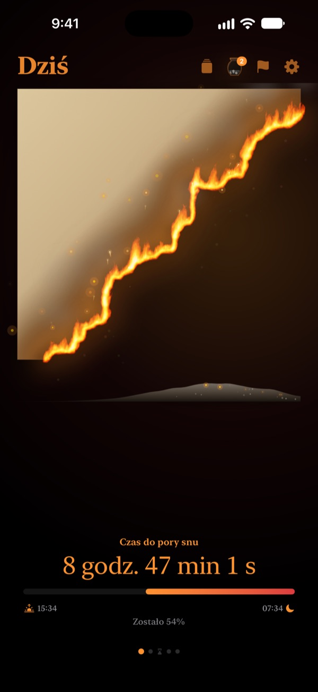
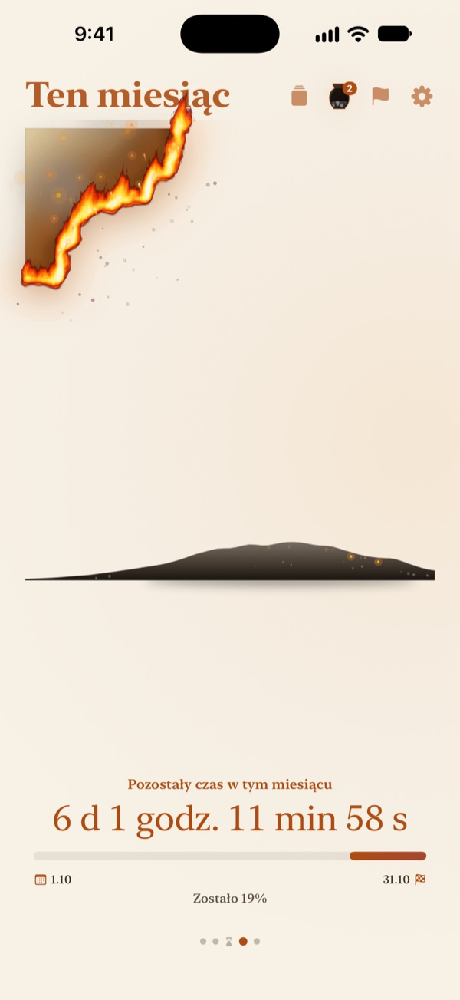
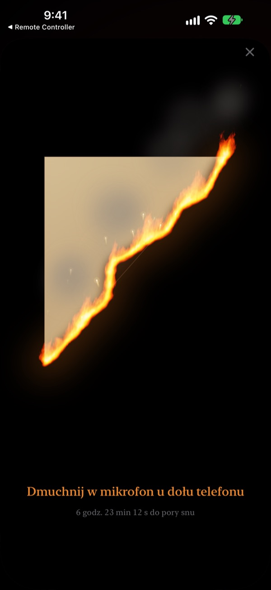
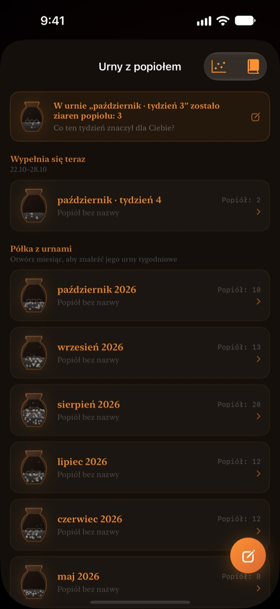

To, co zostało z dziś,
płonie na Twoich oczach
Wieczór, który w liczbach wygląda niewinnie, jako płonący pergamin wygląda zupełnie inaczej. Pół godziny przed snem dmuchasz w ekran, gasisz ogień i zamykasz dzień.
Płonący pergamin, zdmuchiwanie płomienia i refleksje są za darmo.

Spróbuj go zdmuchnąć
Przesuń zegar tuż przed porę snu, a potem przytrzymaj przycisk albo dmuchnij w mikrofon.
Nagle północ?
Kolacja, chwila na kanapie i dzień minął. Cyfry na zegarze co wieczór wyglądają tak samo, więc nie czujesz, że czasu ubywa. Płonący Pergamin pokazuje resztę dnia jako dopalający się pergamin, żebyś zauważył to, zanim wieczór zniknie.
Dzień, tydzień i rok płoną
Od przebudzenia do pory snu pergamin powoli się spala. Tak samo zobaczysz, ile zostało z tego tygodnia, miesiąca i roku.
Dodaj cel z datą jako termin, a odliczanie pobiegnie obok.

Zdmuchnij dzień
Od 30 minut przed snem dmuchasz w płonący pergamin i gasisz ogień. Liczy się tylko siła oddechu, nic nie jest nagrywane.
Ocalały okruch zostaje zachowany. Odwróć go i napisz na odwrocie zdanie o dzisiejszym dniu.

Miniony czas zostaje popiołem
Podsumuj dzień jednym zdaniem i umieść go jako punkt na wykresie o dwóch osiach, zależnie od tego, na co poszedł czas. Refleksje gromadzą się w tygodniowych i miesięcznych urnach z popiołem, a przeczytasz je ponownie w Księdze refleksji.
Przepływ popiołu pokazuje na wykresie rozkładu i kalendarzu żaru, dokąd poszedł Twój czas.

Zacznij w trzech krokach
- 1
Ustaw pobudkę i porę snu
Stuknij zębatkę w prawym górnym rogu. Pergamin zapala się i gaśnie według tych godzin.
- 2
Wybierz okres
Przesuwaj między dniem, tygodniem, miesiącem i rokiem albo ukryj zbędne strony w Ustawieniach.
- 3
Dodaj widżet
Na ekranie początkowym lub blokady zobaczysz pozostały czas bez otwierania aplikacji.
Gdzie zobaczysz pozostały czas
- Dzień
- Od przebudzenia do pory snu
- Tydzień · Miesiąc · Rok
- Ile zostało z tego tygodnia, miesiąca i roku
- Wolny czas
- Pergamin tygodnia płonie tylko w godzinach, które zostawiasz dla siebie (Pro)
- Terminy
- Czas do daty celu. Jeden za darmo
- Widżety ekranu początkowego
- Pergamin dnia w rozmiarze małym, średnim i dużym. Tydzień, miesiąc, rok i terminy w małym i średnim
- Widżety ekranu blokady
- Okrągły, prostokątny i w jednej linii
- Dynamic Island · Aktywność na żywo
- Od godziny przed snem albo przez cały dzień. Wybierz lub wyłącz w Ustawieniach
Rozwiń Dynamic Island, by zobaczyć płonący pergamin z pełnym odliczaniem.
Pergamin jest za darmo. Pro mieści więcej.
Za darmo
- Pergaminy dnia, tygodnia, miesiąca i roku
- Zdmuchiwanie płomienia i zbieranie okruchów
- Refleksje w jednym zdaniu, urny z popiołem i Księga refleksji
- Poranne sprawdzenie, opcjonalnie z danymi snu ze Zdrowia
- Widżety ekranu początkowego i blokady, Dynamic Island
- Jeden termin
Płonący Pergamin Pro
- Spalaj tylko swój wolny czas
- Motywy: Księżycowe hanji, Seladon, Zmierzch
- Płomienie: Pożar stepu, Żar, Zimne ognie
- Udostępniaj okruchy jako karty i plakaty
- Eksportuj Księgę refleksji do PDF
- Dwanaście miesięcy przepływu popiołu
- Nieograniczone terminy
To nie subskrypcja. Jeden zakup na zawsze, razem ze wszystkimi przyszłymi funkcjami Pro.
Nowe urządzenie? Stuknij Przywróć zakupy w Ustawieniach.
Częste pytania
Widżet pokazuje inny czas niż aplikacja.
iOS nie odrysowuje widżetów ekranu początkowego co sekundę. Po otwarciu aplikacji wszystko się zgadza. Odliczanie co do sekundy znajdziesz w Dynamic Island i w aktywności na żywo na ekranie blokady.
Dmucham, ale ogień nie gaśnie.
Zdmuchnąć można dopiero od 30 minut przed snem. Sprawdź, czy dostęp do mikrofonu jest dozwolony, i dmuchaj równo przez około sekundę blisko mikrofonu na dole iPhone'a. Krótki dźwięk nie wystarczy.
Czy mój głos jest nagrywany?
Nie. Mierzona jest tylko siła dmuchnięcia. Żaden dźwięk nie jest nagrywany ani zapisywany.
Co widać, gdy śpię?
Po porze snu pojawia się płonące serce i pokazuje, jak daleko jest noc do pobudki. Rano aplikacja pyta, czy położyłeś się o czasie; jeśli późno, dzisiejszy pergamin zaczyna się o tyle przypalony. Po połączeniu ze Zdrowiem bierze zapisany czas zaśnięcia bez pytania.
Kiedy przychodzą powiadomienia?
Godzinę przed snem. Jeśli nie przychodzą, sprawdź Ustawienia > Powiadomienia > Płonący Pergamin.
Czy zużywa dużo baterii?
Odliczanie w aplikacji zmienia się co sekundę, ale widżety iOS odświeża oszczędnie, więc wpływ jest niewielki.
Gdzie są moje dane?
Pora pobudki i snu, terminy, refleksje i urny zostają na Twoim urządzeniu. Twórca dostaje tylko anonimowe statystyki użycia, diagnostykę awarii i opinie, które sam wyślesz. Bez reklam i śledzenia.
Czy Pro to subskrypcja?
Nie. Płacisz raz i masz na zawsze. Na nowym urządzeniu stuknij Przywróć zakupy w Ustawieniach.
Błędy, pomysły lub inne pytania? Napisz na leeo@kakao.com.